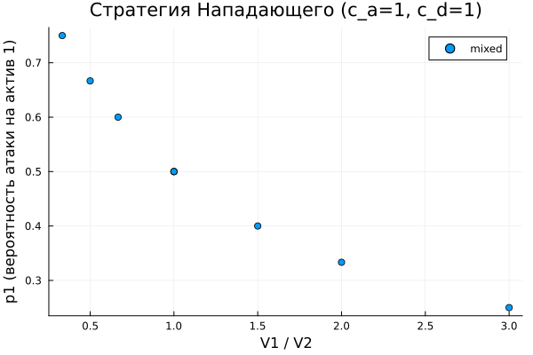
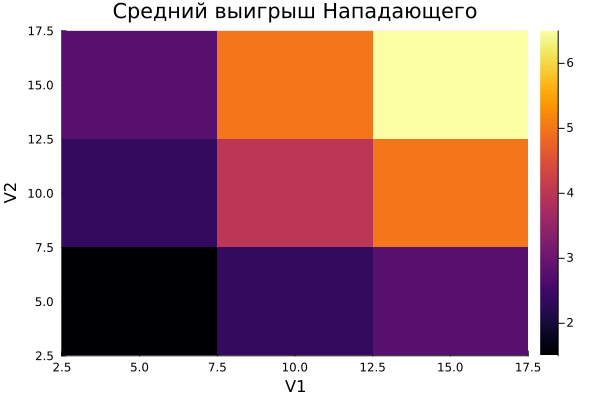
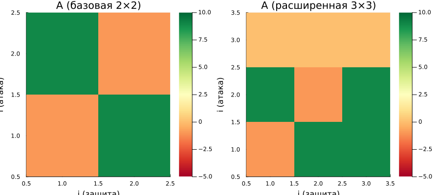

Информация
Докладчик
Цель работы
- Освоить методы теории игр для моделирования
конфликта защитник–нападающий
- Изучить:
- построение платёжных матриц биматричной игры
- поиск равновесия Нэша в чистых и смешанных стратегиях
- влияние параметров модели на равновесные стратегии
- визуализацию и сравнение сценариев
Задание
- Реализовать построение платёжных матриц для игры
защитник–нападающий
- Реализовать поиск равновесия Нэша (чистые и смешанные
стратегии)
- Провести систематический анализ: перебор параметров \(V\), \(c_a\), \(c_d\)
- Визуализировать зависимость равновесных стратегий от параметров
- Расширить игру до 3×3: добавить стратегии «не атаковать» и «не
защищать»
Теоретическое введение
Биматричная игра
Биматричная игра — модель взаимодействия двух
игроков с отдельными матрицами выигрышей:
- Нападающий: выбирает, какой актив атаковать (\(i = 1, \ldots, n\))
- Защитник: выбирает, какой актив охранять (\(j = 1, \ldots, n\))
Платёжные матрицы:
\[A_{ij} = \begin{cases} V_i - c_a, &
i \neq j \\ -c_a, & i = j \end{cases} \qquad D_{ij} = \begin{cases}
-V_i - c_d, & i \neq j \\ -c_d, & i = j \end{cases}\]
Теоретическое введение
Равновесие Нэша
- Чистое: один игрок атакует/защищает конкретный
актив с вероятностью 1 (седловая точка)
- Смешанное: каждый игрок рандомизирует стратегии
так, чтобы противник был безразличен к выбору
Смешанное равновесие находится из условия
безразличия:
\[p^{*\top} A q^* \geq p^\top A q^* \quad
\forall p \qquad p^{*\top} D q^* \geq p^{*\top} D q \quad \forall
q\]
Выполнение
Равновесная стратегия
нападающего

Вероятность атаки актива 1 (\(p_1\)) в зависимости от соотношения \(V_1/V_2\)
Выполнение
Средний выигрыш нападающего

Тепловая карта среднего выигрыша \(U_A\) по сетке \(V_1 \times V_2\) (при \(c_a = c_d = 1\))
Дополнительное задание
Расширение до игры 3×3
Добавлены пассивные стратегии:
- Нападающий: «не атаковать» — выигрыш всегда 0
- Защитник: «не защищать ничего» — нападающий
гарантированно получает \(V_i -
c_a\)

Сравнение матриц выигрыша: базовая 2×2 и
расширенная 3×3
Выводы
Разработана модель конфликта защитник–нападающий на основе теории
игр:
- Платёжные матрицы: построены для двух активов с
учётом ценностей и стоимостей
- Равновесие Нэша: реализован поиск чистых и
смешанных стратегий
- Анализ параметров: рост \(c_a\) снижает активность нападающего; при
\(V_1 \gg V_2\) оба игрока
концентрируются на первом активе
- Игра 3×3: пассивные стратегии расширяют множество
равновесий